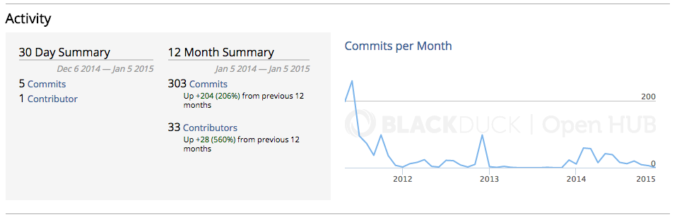

Created by
Sarah Federman / Federcheese
Ryan Gannon / IAmRasputin
Josh Ladisic / JoLaks
Socket.IO enables real-time bidirectional event-based communication. It's a nodeJS framework that uses websockets. It's installed via an npm install and doesn't have any other dependencies.
Socket.IO was created by Automattic, the same company that created & maintains Wordpress.
Initial Commit was: May 1, 2011
Most recent: 23 days ago
Total commits to date: 1,391
Total contributors: 86
They use a blog on their website to announce new features and version releases.
Some discussion about issues, etc. occurs on Github
There is a lead developer Guillermo Rauch "rauchg", who has authored 741 commits of the 1,391 (over half). He has the most unique knowledge.
Rauchg also approves patches and such. All of the dev work is largely done by the top 6 contributors.
It seems like a fine system. The lead developer is active and quick to respond. He seems to make well informed choices for the good of the project. Most people would probably be fine working in this system.
The biggest issue people have seems to be with unexpected disconnects. This issue is normally caused by the user, and they typically figure out how to fix it.
The vast majority of issues reported are solved by the reporter and don't seem to be the fault of socket.io itself. There don't seem to have been many issues that were serious blockers.
Most actual bugs in the past have been related to connection/disconnection issues on one specific platform.
Although commit frequency has been a bit varied, we think the backing of Automattic and longer history of the project ensures some reliability for the future
15pts #notbad, because of lack of email list
Socket.IO fails the Raptor Test because it's managed largely by rauchg. However, he is working on this as an employee of Automattic and a different developer could be assigned the project if he did leave.